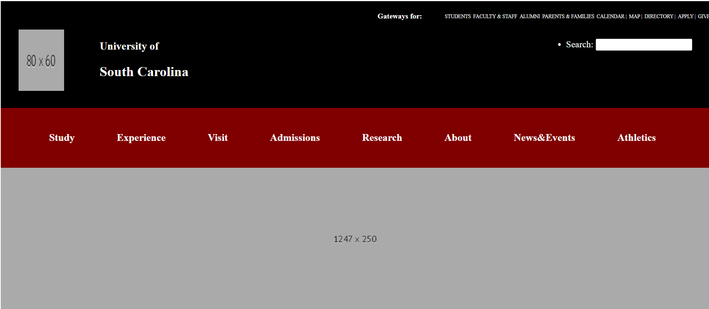
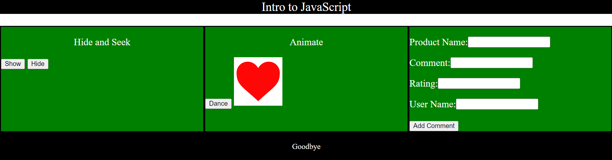

Assignment 1 Basic HTML uses an html document to become the main page of the CSCE 242 class. It incorporates a CSS page to style it and create columns to hold the other assignment links.
Assignment 2 Basic CSS uses a html document with a CSS document to create a more developed website. It incorporates images and tables to store information, and includes links.
Assignment 3 Page Layout uses an HTML document and a CSS document to create a specific design for the website. The HTML document adds tables and links while the CSS document styles the page with flexboxes.
Assignment 5 Recreate CSS Page
Assignment 5 Recreate CSS Page uses an HTML document and a CSS document to recreate the design of a USC website. The HTML document adds links and sections while the CSS document styles the sections with flex.
Assignment 6 Intro JavaScript Page
Assignment 6 uses an HTML document a CSS document, and JavaScript to add diffirent functions to a website. The JavaScript is used to add buttons, animation and allow for user input.
Assignment 7 uses an HTML document, a CSS document, and JavaScript to add diffirent functions and a menu to a website. The JavaScript is used to allow for user input to determine the oldest to youngest age and a thermometer.
Assignment 8 uses an HTML document, a CSS document, and JavaScript to add diffirent functions to a website. The JavaScript functions use loops to create an animation and add color to a thermometer.
Assignment 9 uses an HTML document, a CSS document, and JavaScript to add diffirent functions to a website. The JavaScript functions use arrays to store information and add color to a rainbow.